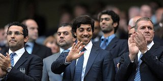
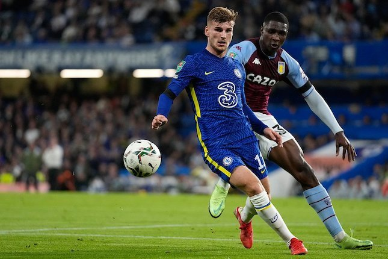
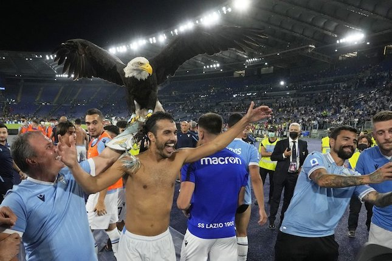
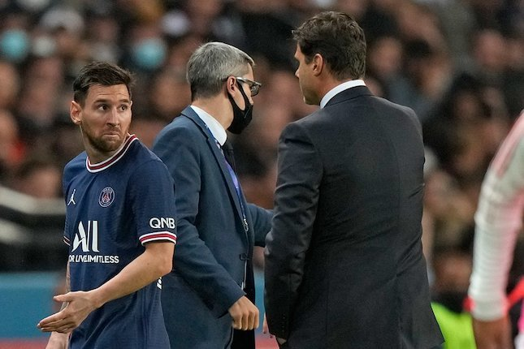

MUNGKIN ANDA TERTARIK

Apa Jadinya Jika Dahulu Sheikh Mansour Beli Liverpool, Bukannya Manchester City?
Bola.net - Taipan Timur Tengah, Sheikh Mansour rupanya berniat membeli Liverpool lebih dahulu sebelum pada akhirnya memutuskan untuk mengakusisi Manchester City...

Kronik Pedro Rodrigues: Dibuang Mourinho dari Roma, Permalukan Mourinho di laga derby
Bola.net - Pedro Rodriguez menjadi aktor utama pada laga derby della capitalle antara Lazio vs AS Roma Dibuat Jose Mourinho dari skuad Rmaawal musim ini,...

Timo Werner Sebenarnya Pilih Pindah ke MU Kenapa Jadinya ke Chelsea
Bola.net - Sebuah informasi menarik mengenai Timo Werner. Striker timnas Jerman itu diklaim sebenarnya nyaris gabung dengan MU di tahun 2020 kemarin..

Kutandai Kau! Mesii dikalim tak Akan Luoakan Perlakuan Pochettino Saar Lawan Lyon
Bola.net - Eks penyerang PSG, Nicolas Anelka mengklaim Lionel Messi tak akan lupakan perlakuan Mauricio Pochettino saat menariknya keluar di tengah laga saat lawan Lyon